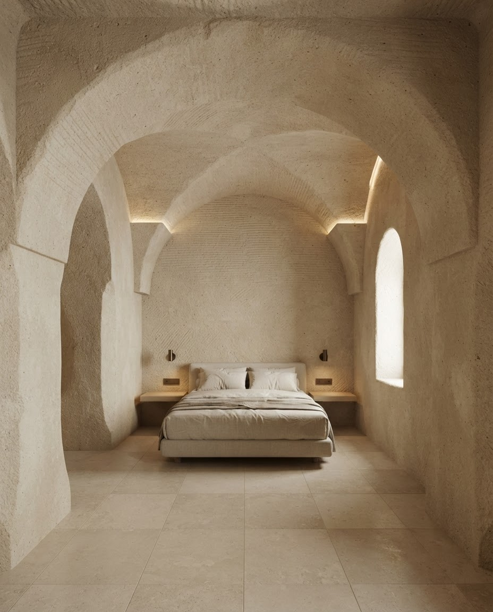
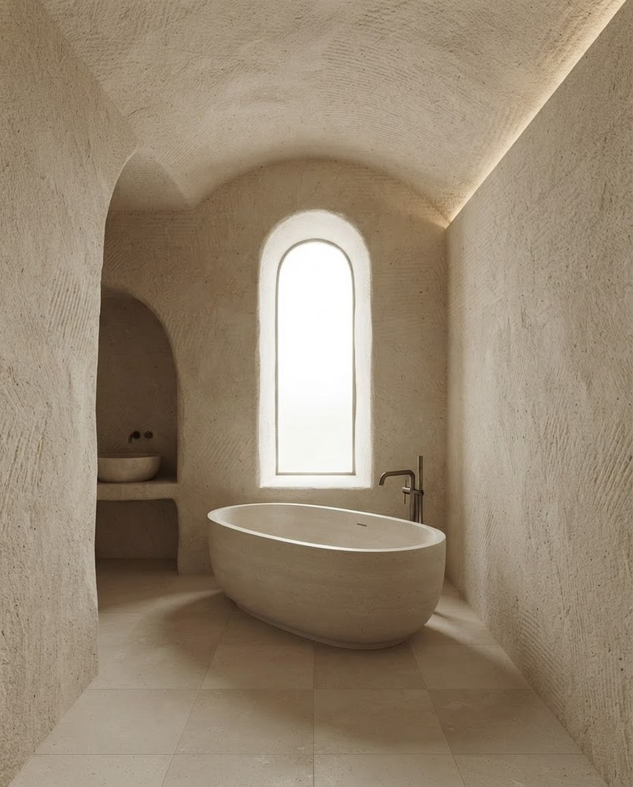
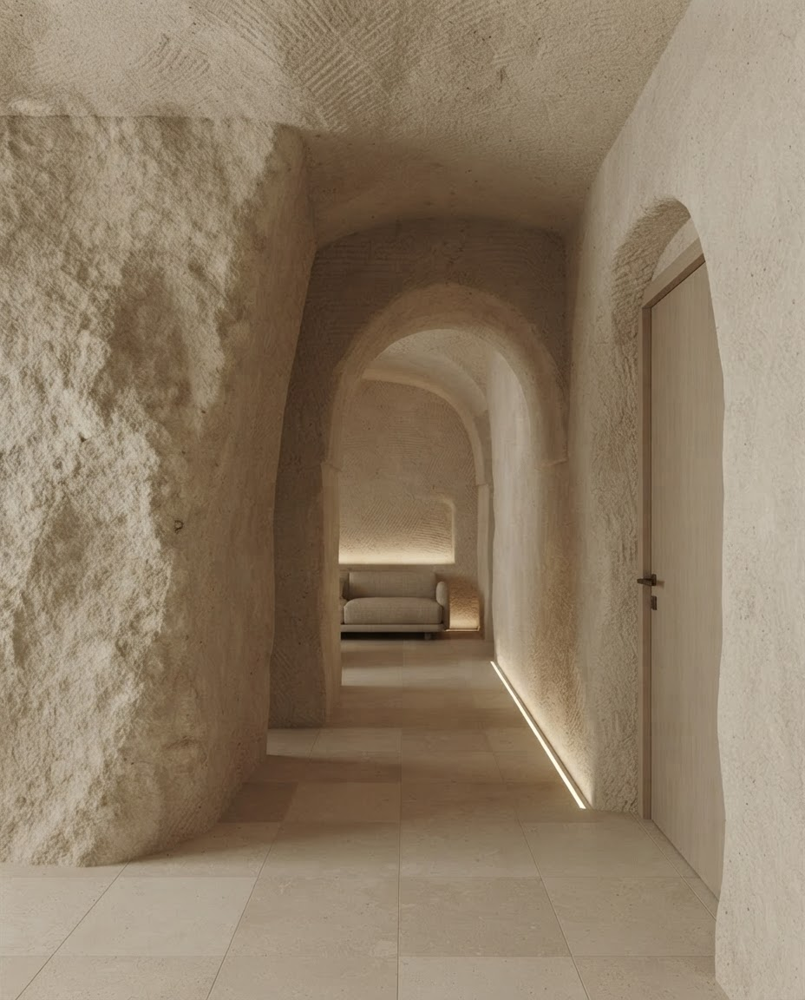
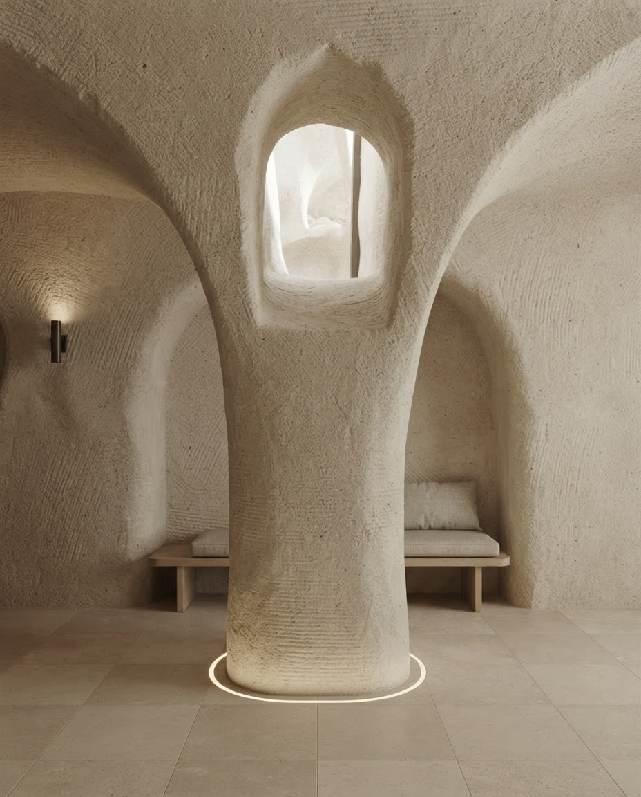
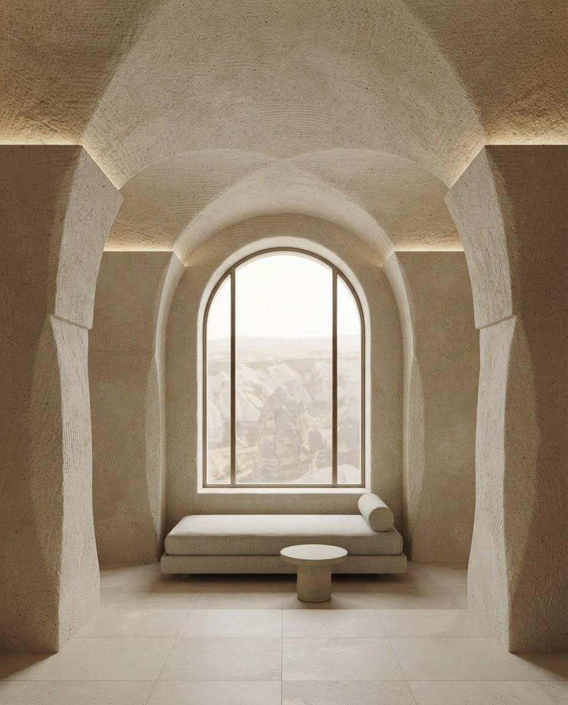

Kaya
Rooms shaped by the stone.
*All images shown are concept visuals
Kaya is a hotel proposal within the soft volcanic stone of Cappadocia, planned to open in 2027. The design begins with the rock: its pale colour, uneven grain and the depth of the spaces carved into it.
Broad stone vaults will give each room its proportions, with deep openings bringing daylight into the quieter interiors. Honed stone underfoot will sit alongside the rougher carved walls, while pale oak furniture and linen bring warmth where the body meets the room. Seating is drawn into recesses, leaving the spaces open and the stone visible. The intention is a hotel that feels settled into its surroundings, with little added beyond what makes a stay comfortable.





Project Details
-
Project Kaya
-
Location Cappadocia, Turkey
-
Type Hotel
-
Opening 2027
-
Status Unbuilt
-
Scope Interior ArchitectureMaterial Selection
-
Materials Volcanic TuffPale OakLinen